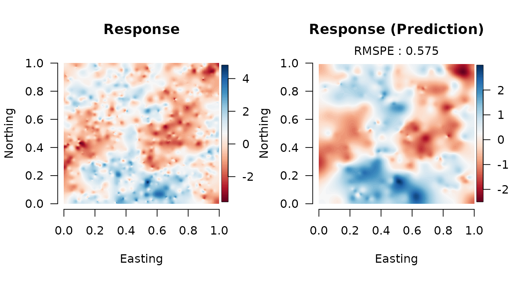

Double Bayesian Predictive Stacking for (univariate) Spatial Analysis - Tutotial
tutorial.RmdWe provide a brief tutorial of the spBPS package. Here
we shows the implementation of the Double Bayesian Predictive Stacking
on synthetically univariate generated data. In particular, we focus on
parallel computing using the packages parallel,
doParallel; but it is not mandatory: it suffices to make it
sequential. For any further details please refer to (Presicce and Banerjee 2024). More examples, for
multivariate data, are available in documentation, and functions
help.
Data generation
We generate data from the model detailed in Equation (2.4) (Presicce and Banerjee 2024), over a unit square.
# dimensions
n <- 1000
u <- 250
p <- 2
# parameters
B <- c(-0.75, 1.85)
tau2 <- 0.25
sigma2 <- 1
delta <- tau2/sigma2
phi <- 4
set.seed(4-8-15-16-23-42)
# generate sintethic data
crd <- matrix(runif((n+u) * 2), ncol = 2)
X_or <- cbind(rep(1, n+u), matrix(runif((p-1)*(n+u)), ncol = (p-1)))
D <- arma_dist(crd)
Rphi <- exp(-phi * D)
W_or <- matrix(0, n+u) + mniw::rmNorm(1, rep(0, n+u), sigma2*Rphi)
Y_or <- X_or %*% B + W_or + mniw::rmNorm(1, rep(0, n+u), diag(delta*sigma2, n+u))
# train data
crd_s <- crd[1:n, ]
X <- X_or[1:n, ]
W <- W_or[1:n, ]
Y <- Y_or[1:n, ]
# prediction data
crd_u <- crd[-(1:n), ]
X_u <- X_or[-(1:n), ]
W_u <- W_or[-(1:n), ]
Y_u <- Y_or[-(1:n), ]Subset posterior models
We opt to divide the original data into K=2, such that
each subsets results in 500 locations.
# hyperparameters values
delta_seq <- c(0.2, 0.25, 0.3)
phi_seq <- c(3, 4, 5)
# function for the fit loop
fit_loop <- function(i) {
Yi <- data_part$Y_list[[i]]
Xi <- data_part$X_list[[i]]
crd_i <- data_part$crd_list[[i]]
p <- ncol(Xi)
bps <- spBPS::BPS_weights(data = list(Y = Yi, X = Xi),
priors = list(mu_b = matrix(rep(0, p)),
V_b = diag(10, p),
a = 2,
b = 2), coords = crd_i,
hyperpar = list(delta = delta_seq, phi = phi_seq), K = 5)
w_hat <- bps$W
epd <- bps$epd
result <- list(epd, w_hat)
return(result)
}
# function for the pred loop
pred_loop <- function(r) {
ind_s <- subset_ind[r]
Ys <- matrix(data_part$Y_list[[ind_s]])
Xs <- data_part$X_list[[ind_s]]
crds <- data_part$crd_list[[ind_s]]
Ws <- W_list[[ind_s]]
result <- spBPS::BPS_post(data = list(Y = Ys, X = Xs), coords = crds,
X_u = X_u, crd_u = crd_u,
priors = list(mu_b = matrix(rep(0, p)),
V_b = diag(10, p),
a = 2,
b = 2),
hyperpar = list(delta = delta_seq, phi = phi_seq),
W = Ws, R = 1)
return(result)
}
# subsetting data
subset_size <- 500
K <- n/subset_size
data_part <- subset_data(data = list(Y = matrix(Y), X = X, crd = crd_s), K = K)Double BPS parallel fit
Parallel implementation, exploiting 2 computing core.
# number of clusters for parallel implementation
n.core <- 2
# list of function
funs_fit <- lsf.str()[which(lsf.str() != "fit_loop")]
# list of function
funs_pred <- lsf.str()[which(lsf.str() != "pred_loop")]
# starting cluster
cl <- makeCluster(n.core)
registerDoParallel(cl)
# timing
tic("total")
# parallelized subset computation of GP in different cores
tic("fit")
obj_fit <- foreach(i = 1:K, .noexport = funs_fit) %dopar% { fit_loop(i) }
fit_time <- toc()
gc(verbose = F)
# Combination using double BPS
tic("comb")
comb_bps <- BPS_combine(obj_fit, K, 1)
comb_time <- toc()
Wbps <- comb_bps$W
W_list <- comb_bps$W_list
gc(verbose = F)
# parallelized subset computation of GP in different cores
R <- 250
subset_ind <- sample(1:K, R, T, Wbps)
tic("prediction")
predictions <- foreach(r = 1:R, .noexport = funs_pred) %dopar% { pred_loop(r) }
prd_time <- toc()
# timing
tot_time <- toc()
# closing cluster
stopCluster(cl)
gc(verbose = F)Results collection
# statistics computations W
pred_mat_W <- sapply(1:R, function(r){predictions[[r]][[1]]})
post_mean_W <- rowMeans(pred_mat_W)
post_var_W <- apply(pred_mat_W, 1, sd)
post_qnt_W <- apply(pred_mat_W, 1, quantile, c(0.025, 0.975))
# Empirical coverage for W
coverage_W <- mean(W_u >= post_qnt_W[1,] & W_u <= post_qnt_W[2,])
cat("Empirical coverage for Spatial process:", round(coverage_W, 3),"\n")
#> Empirical coverage for Spatial process: 0.992
# statistics computations Y
pred_mat_Y <- sapply(1:R, function(r){predictions[[r]][[2]]})
post_mean_Y <- rowMeans(pred_mat_Y)
post_var_Y <- apply(pred_mat_Y, 1, sd)
post_qnt_Y <- apply(pred_mat_Y, 1, quantile, c(0.025, 0.975))
# Empirical coverage for Y
coverage_Y <- mean(Y_u >= post_qnt_Y[1,] & Y_u <= post_qnt_Y[2,])
cat("Empirical coverage for Response:", round(coverage_Y, 3),"\n")
#> Empirical coverage for Response: 0.972
# Root Mean Square Prediction Error
rmspe_W <- sqrt( mean( (W_u - post_mean_W)^2 ) )
rmspe_Y <- sqrt( mean( (Y_u - post_mean_Y)^2 ) )
cat("RMSPE for Spatial process:", round(rmspe_W, 3), "\n")
#> RMSPE for Spatial process: 0.419
cat("RMSPE for Response:", round(rmspe_Y, 3), "\n")
#> RMSPE for Response: 0.575
Presicce, Luca, and Sudipto Banerjee. 2024. “Bayesian Transfer Learning for Artificially Intelligent
Geospatial Systems: A Predictive Stacking Approach.”
arXiv Preprint, arXiv:2410.09504. https://doi.org/10.48550/arXiv.2410.09504.